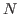
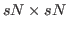
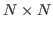

We examine block preconditioners for time-dependent incompressible Navier-Stokes problems and some related coupled problems. In some time-dependent problems, explicit time stepping methods can require much smaller time steps for stability than is needed for reasonable accuracy. This leads to taking many more time steps than would otherwise be needed. With implicit time stepping methods, we can take larger steps, but at the price of needing to solve large linear systems at each time step. We consider implicit Runge-Kutta (IRK) methods. Suppose our PDE has been linearized and discretized with

degrees of freedom. Using an
linear system that must be solved at each time step. These linear systems are block systems, where each block is
. We investigate preconditioners for such systems, where we take advantage of the structure of the subblocks.